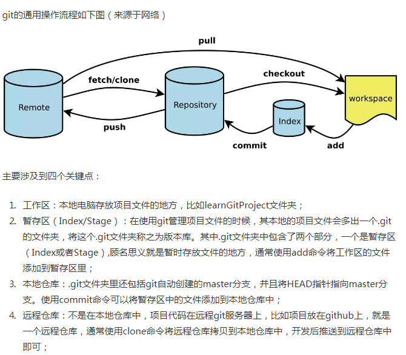
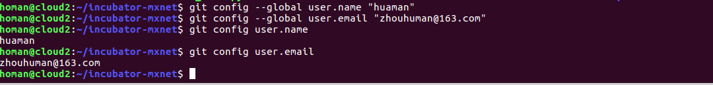
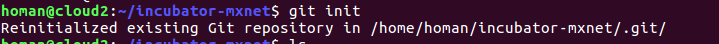
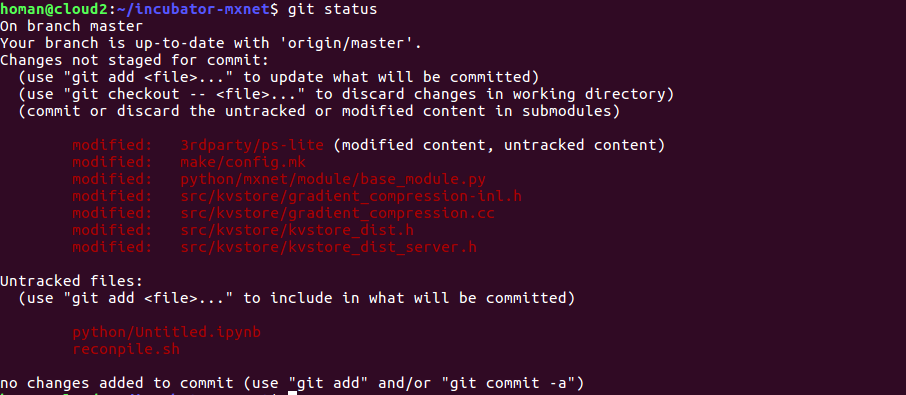
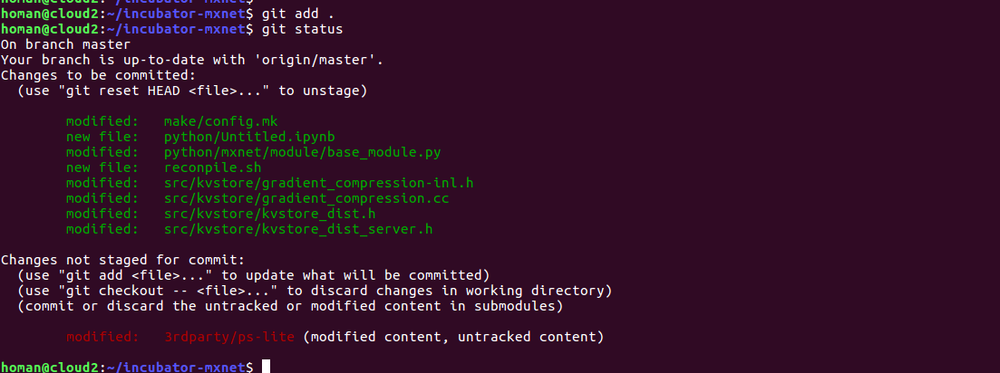
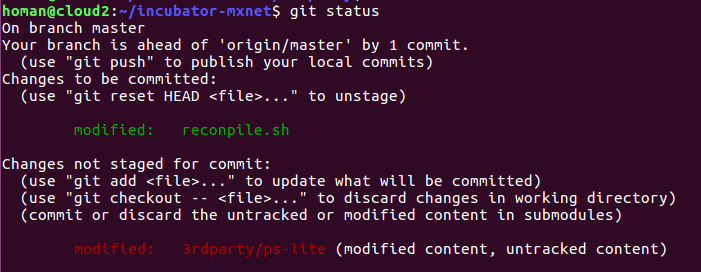
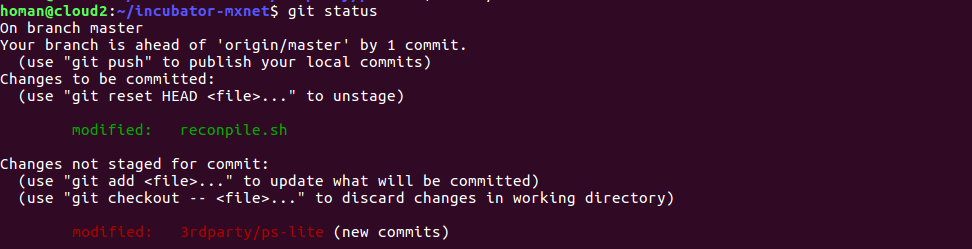
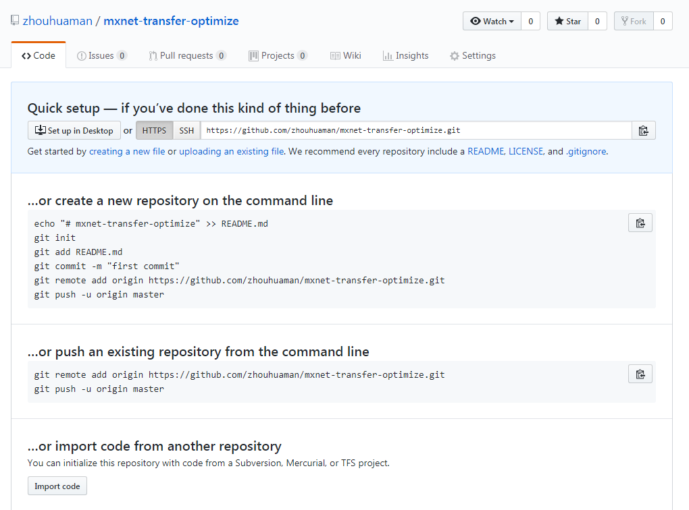

如何用github进行代码库的版本管理¶

git管理配置的命令¶
第一步 在本地建立一个版本仓库（repository）¶
你需要指定一个文件夹（存放项目代码的根目录），作为repository
第二步 立管理员身份¶
进入主目录，如此处的incubator 
第三步初始化仓库文件夹¶
为了将创建好的文件夹制定为版本仓库文件夹，需要对其初始化。命令 git init  原来代码是从github上拉下来的，所以已经有git信息了
第四步 显示工作目录和暂存区的状态¶
命令 git status
可以看到哪些修改被暂存了，哪些没有

工作区与暂存区的交互¶
第五步 将文件内容添加到索引（将修改添加到暂存区），将要提交的信息添加的索引库中¶
注意：这里的暂存区不等于存储库repository,
命令：git add

在commit之前可以多次进行
这一步是为git commit服务的，add上次的东西才会被commit到本地库中。
如何解决库中有库，会出现诸如commit or discard the untracked or modified content in submodules的问题：

用git submodule statts发现3rdparty/ps-lite本身也是一个仓库，它的文件修改在上层仓库中无法进行add。
解决方法：d 到3rdparty/ps-lite仓库，在这个仓库中进行git add、git commit操作。再到上层库看git status会出现：

暂存区域本地仓库（分支）上的交互¶
第六步 将更改提交到本地仓库中¶
命令：git commit -m "change ..."
将索引的当前内容与描述更改的用户和日志消息一起存储在新的提交中。参数“-m”表示message，也就是说其后紧跟着的字符串是对该次修改的所进行的一个描述。commit结束说明一个新的版本诞生。
然后git log查看版本迭代信息。
gi diff可以看下工作区与版本库（维护的最新版本）的区别。由
第七步（进阶） 版本的回退和前滚¶
回退：git reset --hard HEAD^^^(回退到前三个版本)或者用commit id(用git log看很长的那一段哈希值)git reset --hard commit
前滚: 找到前一版本的cmmit id 然后git reset --hard commit id 如果找不到怎么办？先用git reflog查看每一次执行的命令
本地仓库与远程仓库（github）的交互¶
学会了本地库的版本管理后，为了备份或者共享代码的需要，需要将本地的库上传到github上。
第八步 在github准备一个在线的仓库repositoy¶
 参与任何一 Git 项目的协作，必须要了解该如何管理远程仓库。远程仓库是指托管在网络上的项目仓库，可能会有好多个，其中有些你只能读，另外有些可以写。同他人协作开发某个项目时，需要管理这些远程仓库，以便推送或拉取数据，分享各自的工作进展。管理远程仓库的工作，包括添加远程库，移除废弃的远程库，管理各式远程库分支，定义是否跟踪这些分支等等。
第九步 将本地修改add到远程仓库¶
命令：git remote add origin https链接
操作完成后，origin用于标识你要操作的远程仓库
输入后出现错：
由于这个仓库是从别人仓库clone下来的，所以origin记录的是原来clone下来的那个仓库。
解决办法：
- 先删除远程git仓库
git remote rm origin
- 再添加远程git仓库 git remote add origin 自己的https链接
第十步 将本地分支的更新推送到远程仓库¶
命令：git push -u origin master(或其他branch)
-u 表示指定一个默认主机，后面跟origin
输入账号和密码即可